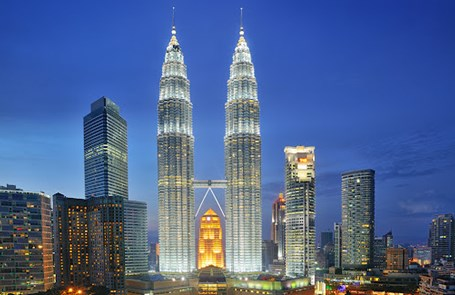

Petronas Towers

- Overview
- Name: Petronas Towers (also known as Petronas Twin Towers)
- Location: Kuala Lumpur, Malaysia
- Height: 451.9 meters (1,483 feet)
- Floors: 88 floors above ground and 5 basement levels
- Completion: 1998
- Architect: César Pelli
- Structural Engineer: Thornton Tomasetti
- Architectural Design
- Architectural Style:
- The Petronas Towers are designed in a postmodern style, incorporating elements of Islamic art and culture to reflect Malaysia's Muslim heritage. The floor plan is based on an eight-pointed star, a common motif in Islamic architecture, which symbolizes unity, harmony, stability, and rationality.
- Exterior Design:
- The towers' façades are constructed of stainless steel and glass, which create a sleek and reflective surface. This design choice not only provides a modern aesthetic but also helps in reducing heat and glare from the tropical sun.
- Skybridge:
- One of the most distinctive features of the Petronas Towers is the skybridge that connects the two towers on the 41st and 42nd floors, 170 meters (558 feet) above the ground. The skybridge is not only a functional connector but also an emergency exit route and a spectacular viewing platform for visitors.
- Structural System:
- The structural system of the towers is an innovative design comprising a high-strength reinforced concrete core with a tube-in-tube design. This system provides stability against the wind and seismic forces.
- The concrete used in the towers is twice as effective as standard concrete in terms of strength and resistance to wear and tear, which was crucial given the height and slenderness of the buildings.
- Foundation:
- The foundations of the towers are among the deepest in the world, extending 120 meters (394 feet) into the ground. This depth provides the necessary stability for the massive structures, especially considering Kuala Lumpur's soft soil.
- Spire Design:
- Each tower is topped with a spire that reaches up to 73.5 meters (241 feet). The spires are designed to enhance the towers' height and provide a distinctive architectural feature that contributes to their iconic status.
- Interior Design
- Office Space:
- The towers contain a total of approximately 213,750 square meters (2.3 million square feet) of office space. This space is used primarily by the national oil company, Petronas, and its subsidiaries, as well as other multinational corporations.
- Suria KLCC:
- At the base of the towers is the Suria KLCC, a premier shopping center that features high-end retail stores, restaurants, and entertainment options. This mall enhances the commercial viability and public accessibility of the towers.
- Symbolic and Cultural Significance
- National Pride:
- The Petronas Towers are a symbol of Malaysia's economic development and aspirations. They represent the country's progress and modernization, serving as a national landmark.
- Cultural Integration:
- The design incorporates elements of Islamic art, reflecting the cultural heritage of Malaysia and integrating it with modern engineering and architectural practices.
- Tourism and Economy:
- The towers are a major tourist attraction, drawing visitors from around the world. They contribute significantly to the local economy through tourism, retail, and business activities.
- Challenges and Innovations
- Construction Challenges:
- Building the Petronas Towers posed significant challenges due to the soft limestone and sandstone soil conditions in Kuala Lumpur. Advanced engineering techniques were used to ensure the stability of the structures.
- Safety Features:
- The design includes numerous safety features, such as the skybridge, which serves as a refuge during emergencies. The towers also have advanced fire safety systems and multiple high-speed elevators to facilitate quick evacuation if needed.
- Conclusion
- The Petronas Towers are not just a feat of engineering but also an architectural symbol of Malaysia's growth and ambition. They stand as a testament to innovative design, integrating cultural motifs with modern technology, and continue to be a source of inspiration and pride for Malaysians and admirers worldwide.